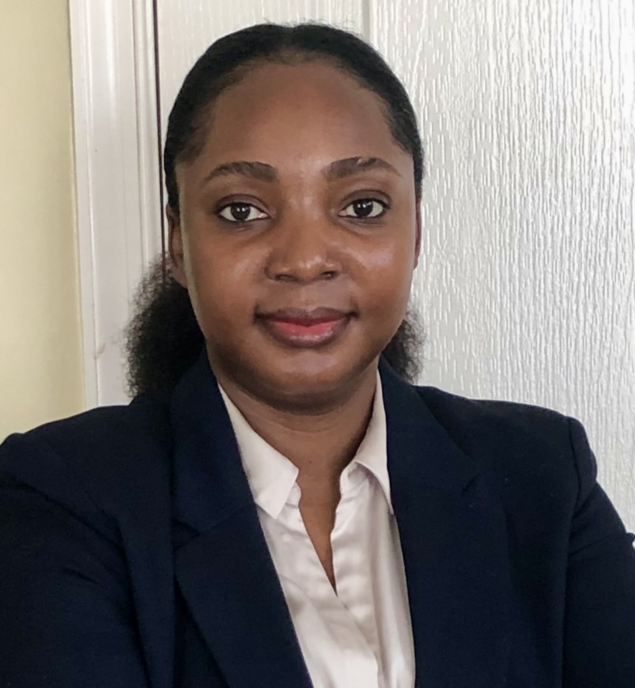

MY RESUME

Summary
Results-driven professional with over 6 years of experience as a Scrum Master, Project Manager
,and Web Developer. Proven expertise in leading Agile teams, managing projects from initiation
to delivery, and developing responsive, scalable web applications. Skilled in facilitating Scrum
ceremonies, removing impediments, and aligning project goals with business objectives.
Proficient in web development technologies such as HTML, CSS, JavaScript, and React, with a strong focus
on delivering high-quality solutions on time and within budget.
Education
Makerere University
Bachelor of science information technology
Certificates
Certified Scrum Master (CSM)
Certified SAfe Scrum Master
Project Management Professional (PMP)
Work Experience
NBS
Scrm Master II 2022 - Present
- Facilitated Agile ceremonies (stand-ups, sprint reviews, planning meetings, etc.) to ensure team
engagement.
- Guided the team through the SDLC
- Assisted in overall program/project planning and ensure cross-team dependencies are well-understood
and modelled in project plans and timelines. Identified, document, and publish risks and issues
related to the overall program and define resolution paths where required.
- Resolved cross-team impediments and blocking issues
- Scheduled and conducted meetings and ceremonies by best practices for Agile/Scrum software development
- Continuously work to improve team performance and productivity
- Helped the team focus on creating high value increments that meet the definition of done
- Facilitated the adoption of Lean Thinking, including visualizing and continuous optimization of delivery
flow using the Kanban Method
- Facilitate Retrospectives that generate new ideas for process improvement.
- Collaborated with the Product Owner to create a product backlog
- Maintain relevant metrics that guide the development team to more efficient processes in their work
and in satisfying their Product Owner and stakeholders
ZAF LLC
Scrm Master / Project Manager 2018 - 2022
- Guided and educated the team on how to get the most out of self-organization and self-management
- Assessed the Scrum Maturity of the team and organization and coaching the team to higher levels of maturity,
at a pace that is sustainable and comfortable for the team and organization
- Build a trusting and safe environment where problems can be raised without fear of blame, retribution, or
being judged, with an emphasis on healing and problem solving.
- Helped determine and maintain overall team velocity and capacity with regards to the team's roadmap of
projects and planning/prioritization
- Escalated issues of concern or risk related to deliverables, able to work with Stakeholders and Developments
Managers to address or mitigate such issues
- Worked with multiple teams in a Scrum Master role that is focused on the successful processes and outcomes
related to those teams
- Ensure teams meet sprint commitments and release milestones
- Collaborated with the Product Owner to ensure that the team's backlog is well-groomed and actionable -
defining acceptable states of issues.
- Facilitated getting the work done without coercion, assigning, or dictating the work within the scope of time
Skills
- Scaled Agile Framework
- Facilitation / servant leadership
- Coaching and mentoring
- Kanban
- Azure Dev Ops
- Jira
- Agile Methodologies
- Scrum
- Great communication skills
- Highly organized
Other